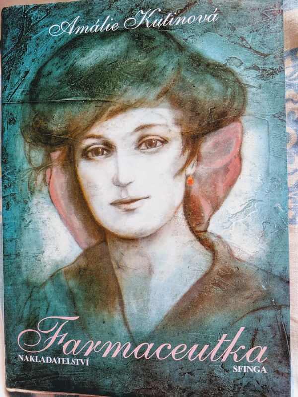
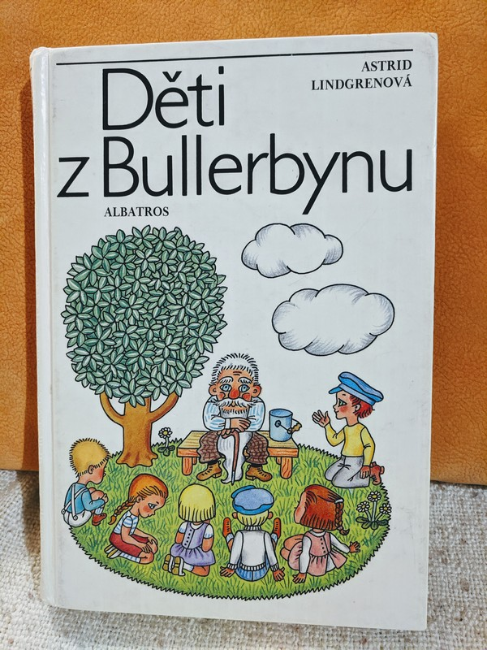
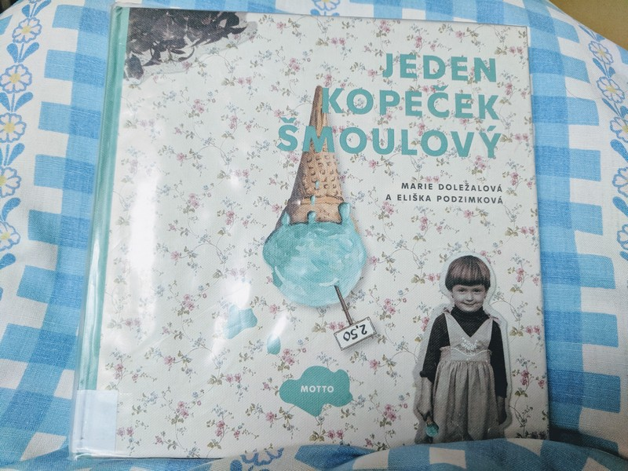
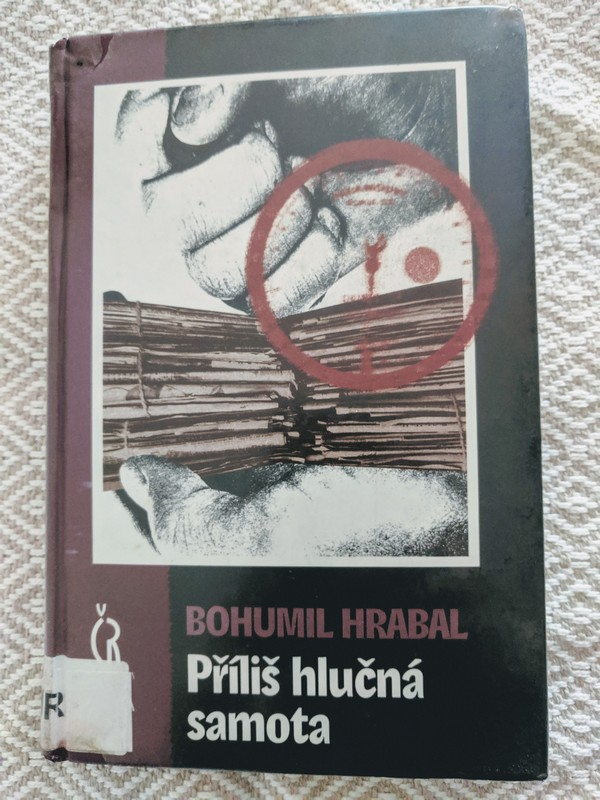

Jaro už je v plném proudu, a tak je tohle tak trochu “prošlý” příspěvek, ale nějak dřív nebyla chuť k jeho sepsání. A je to ostuda, neb přes zimu jsem nepřečetla prakticky nic - všechny následující tituly mi dělaly společnost během mého zimního marodění, což bylo taky to jediné, co mě přimělo najít si čas na knihu. Stíhat se holt nedá vše :-)
Amálie Kutinová - Farmaceutka
Hned na úvod jedna srdcovečka <3 Pro milovníky dětské knižní série o Gabře a Málince doslova nutnost, pokud chcete vědět, jak to s Málinkou bylo v životě dál a zda si splnila sen stát se lékárnicí. V dnešní neromantické době je to jako čtení z jiného světa. Asi i proto se k tomu příběhu tak ráda vracím…

Astrid Lindgrenová - Děti z Bullerbynu
Každého člověka, kdo mi řekne, že jako dítě nikdy nečetl Děti z Bullerbynu, mám chuť přivinout na svou hruď a politovat. O co všechno jste byli ochuzeni! Děti z Bullerbynu jsou moje nejmilovanější dětská knížka, poklad mezi všemi mými knihami :-) A baví mě číst i dnes, po letech, kdy už mi nad některými těmi dětskými vylomeninami coby matce vstávají vlasy hrůzou na hlavě. Taky vám v dětství přišlo hrozně dobrodružné, že k sobě děti přelézaly po stromě oknem, stavěly si tunely v seníku nebo utíkaly před rozzuřeným býkem, ale dneska byste jim za to daly nejmíň týdenního zaracha :D?? Ale stejně, vždycky když to čtu, lituju, že jsem se nenarodila před lety na švédském venkově O:)…

Marie Doležalová, Eliška Podzimková - Jeden kopeček šmoulový
Štěstí totiž nikdy není vidět úplně zblízka. Když se na něj díváte moc upřeně, nikdy ho neuvidíte. Tváří se jako něco běžného, co je zadarmo a nemá to žádnou cenu. Teprve z nadhledu a odstupu vidíte, jak moc umí obyčejné chvíle zářit a kolik znamenají.
Tahle knížka je pro nás, děti devadesátek, tak krásnou a nostalgickou záležitostí! Byť je to vlastně taková malá rodinná kronika, při jejím čtení si zavzpomínáte na své vlastní dětství, tehdejší atmosféru, módní hity… je to zkrátka takové milé retro v hezkém balení. Pokud jste zhruba stejný ročník jako autorka, zaručuju vám skvělou zábavu a místy i hlasitý smích. Kapitola o pánské jízdě na chalupě zcela jistě přispěla k mé rychlejší rekonvalescenci :D Marie Doležalová má mimo to úžasný talent dát krásnou formu úvahám, které se i mně často honí hlavou. A tak vznikla knížka nejen vtipná a hezky graficky zpracovaná, ale také plná vlídných a moudrých slov. Měla jsem ji vypůjčenou z knihovny, ale určitě bych neváhala udělat jí čestné místo i v mé domácí knihovničce.
Mám radši nenápadné věci. Malé náhody a neopakovatelné okamžiky. Mám ráda chyby, které nakonec zůstanou v příběhu. Takový je přece celý život. Život je to, co se doopravdy stane. Život je všechno to čekání a všechno to, co jsme nedostali. Život není to, co jsme si původně představovali. Spíš je to všechna ta improvizace okolo.

Bohumil Hrabal - Příliš hlučná samota
A jedna klasika na závěr, aby se neřeklo :-) Útlý příběh o dělníkovi ze sběrny starého papíru, který z lisu zachraňuje vzácné knihy, je intenzivním a smutným čtením na pár zimních večerů.
